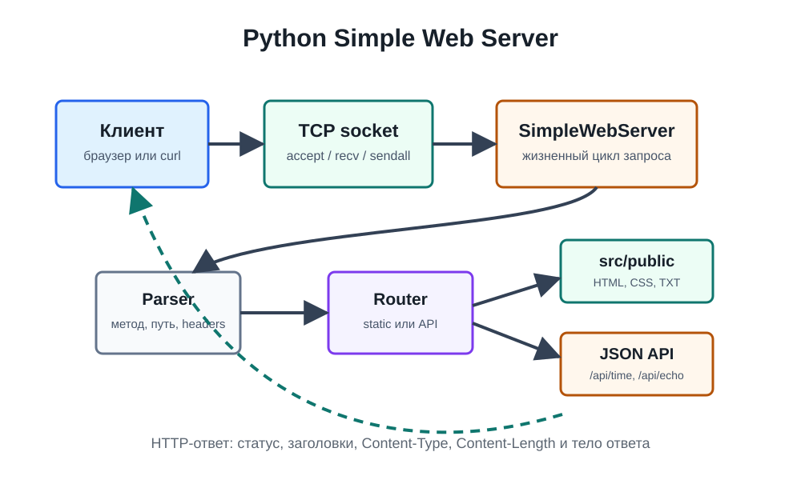

Вариативная часть практики
Python: Simple Web Server
Вариативное задание посвящено созданию собственного учебного HTTP-сервера на Python без Flask, Django, FastAPI и других веб-фреймворков. Работа демонстрирует базовую механику веба: TCP-соединение, HTTP-запрос, маршрутизацию, отдачу файлов и формирование ответа.
Постановка задачи
Что было реализовано
Задача состояла в практическом воспроизведении темы `Python: A Simple Web Server` из направления `Build your own Web Server`. Вместо использования готового фреймворка сервер был построен на стандартном модуле `socket`, чтобы явно показать сетевой уровень и структуру HTTP-сообщений.
Сетевой уровень
Сервер открывает TCP-сокет, привязывается к адресу и порту, принимает клиентские подключения и обрабатывает их в отдельных потоках. Такой подход делает видимой нижнюю механику, которая обычно скрыта внутри веб-фреймворков.
HTTP-логика
Реализация разбирает стартовую строку запроса, заголовки, путь, query-параметры и формирует корректный HTTP-ответ со статусом, заголовками, типом содержимого и длиной тела.
Статика и API
Сервер отдает HTML, CSS и текстовые файлы из `src/public`, показывает листинг директорий без `index.html`, а также предоставляет JSON-маршруты `/api/time` и `/api/echo` как творческое расширение.
Архитектура
Как устроен учебный сервер
В основе лежит класс `SimpleWebServer`, который управляет жизненным циклом сервера: открывает порт, принимает соединение, читает запрос, передает его на разбор, выбирает обработчик и отправляет ответ клиенту.
Для структурирования кода используются объекты `HttpRequest` и `HttpResponse`. Это позволяет отделить представление запроса и ответа от низкоуровневой работы с байтами. В результате код становится ближе к реальной архитектуре веб-серверов, но остается достаточно компактным для учебного анализа.

Функциональность
Ключевые возможности
GET и HEAD
Сервер поддерживает два метода: `GET` для получения ресурса и `HEAD` для получения заголовков без тела ответа. Остальные методы получают ответ `405 Method Not Allowed`.
Статические файлы
Запросы к обычным путям обрабатываются как обращение к файлам внутри `src/public`. Для директорий автоматически отдается `index.html`, а при его отсутствии генерируется HTML-листинг.
Безопасность пути
Реализована защита от path traversal: сервер нормализует путь и не позволяет получить файлы за пределами публичной директории. Опасные запросы получают ответ `403 Forbidden`.
Страницы ошибок
Ошибки `400`, `403`, `404`, `405` и внутренние сбои преобразуются в читаемые HTML-страницы. Это делает поведение сервера понятным как для браузера, так и для ручной проверки через `curl`.
JSON API
Маршрут `/api/time` возвращает текущее UTC-время, а `/api/echo` отражает метод, путь, заголовки и query-параметры запроса. Это показывает переход от статической отдачи файлов к динамической генерации данных.
Документированная проверка
В документации описаны команды запуска, сценарии проверки и ожидаемые HTTP-статусы для главной страницы, API, отсутствующего файла и попытки выхода за пределы `public`.
Структура реализации
Основной код расположен в `src/simple_web_server.py`. Демонстрационные файлы находятся в `src/public`: главная страница, страница описания, CSS и тестовая директория `notes` для проверки автоматического листинга.
src/
simple_web_server.py
public/
index.html
about.html
styles.css
notes/readme.txtЗапуск
Для запуска нужен только Python 3. После старта сервер доступен в браузере по локальному адресу, а отдельные маршруты можно дополнительно проверить через `curl`.
python3 src/simple_web_server.py \
--host 127.0.0.1 \
--port 8080 \
--root src/publicПосле запуска можно открыть `http://127.0.0.1:8080/`.
Итог
Учебная ценность задания
Вариативное задание показывает, что веб-сервер не является магическим компонентом фреймворка. В минимальном виде это программа, которая принимает TCP-подключение, читает байты, интерпретирует их как HTTP-запрос, выбирает нужный обработчик и отправляет обратно строго оформленный HTTP-ответ.
Именно поэтому работа имеет методическую ценность: она раскрывает фундаментальные принципы, на которых строятся более сложные веб-приложения. После такой реализации проще понимать, что делают промышленные серверы, маршрутизаторы, middleware, API-слои и механизмы отдачи статических файлов.